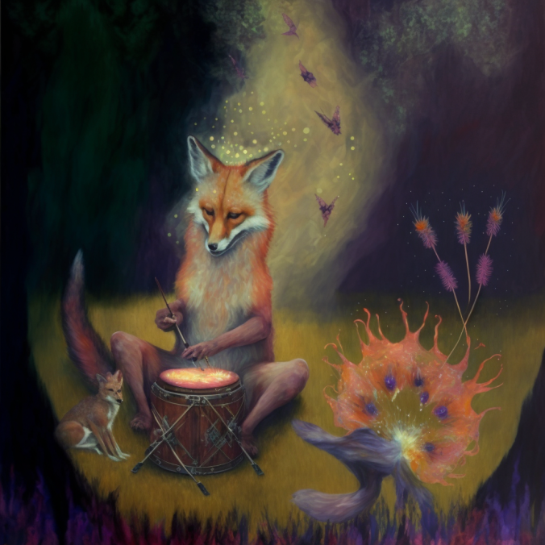
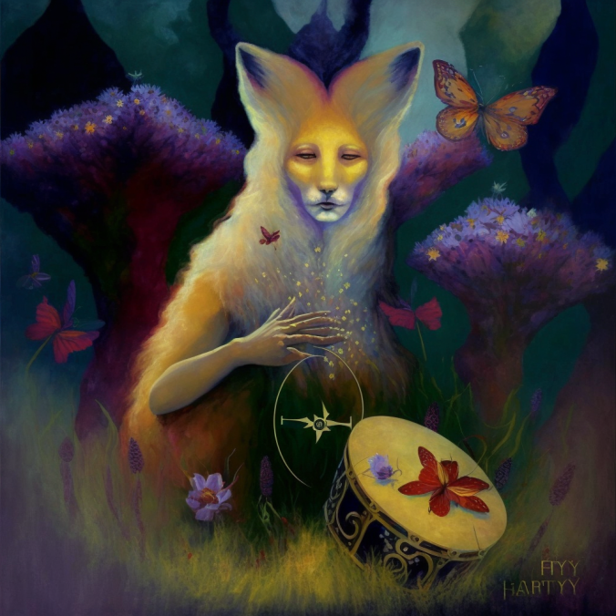
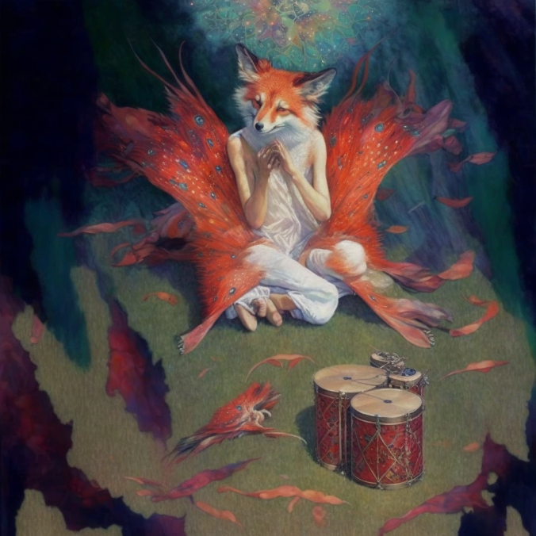
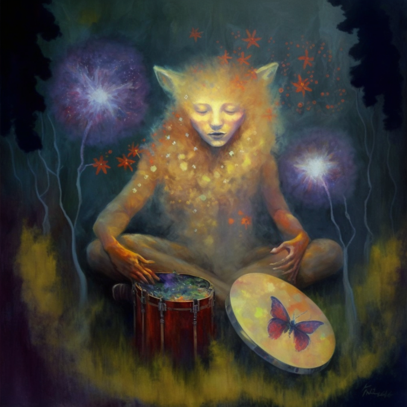
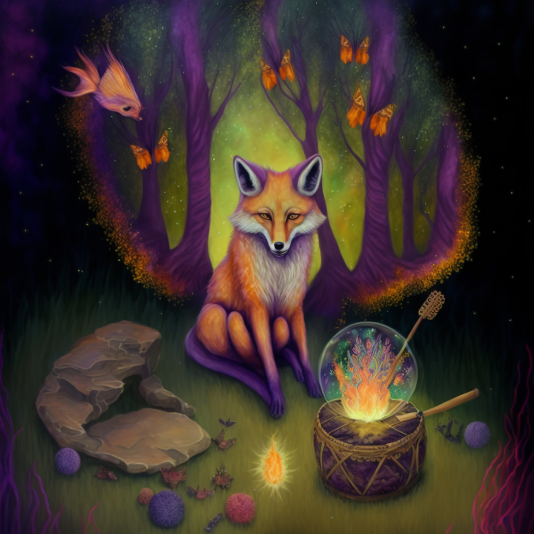
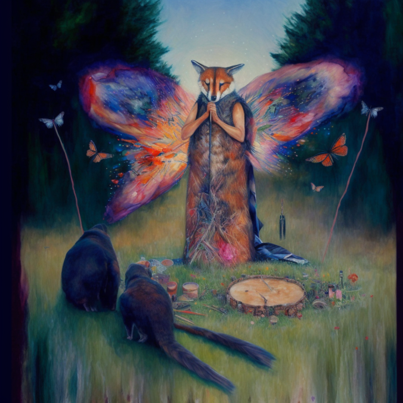

AI-generated Artworks
Choose your favorite
Classic fox playing on the drum

Magic fox with big ears

Fox with butterfly wings and human body

Human-face fox playing drum

Magical classic fox

Standing fox with butterfly wings in woos with animals
